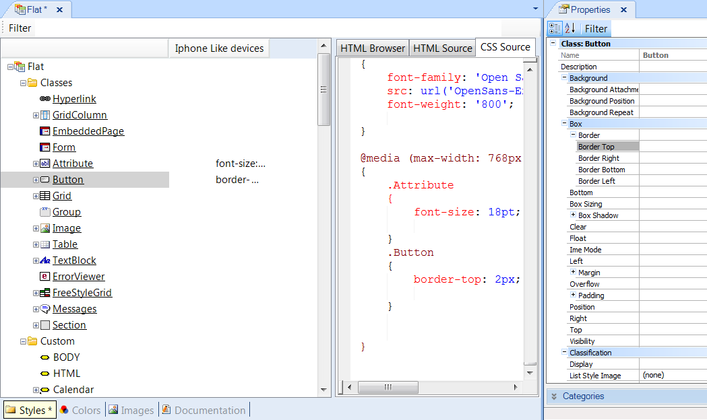
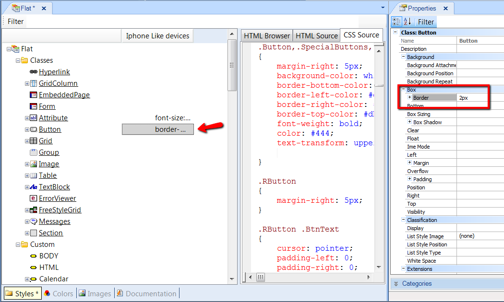
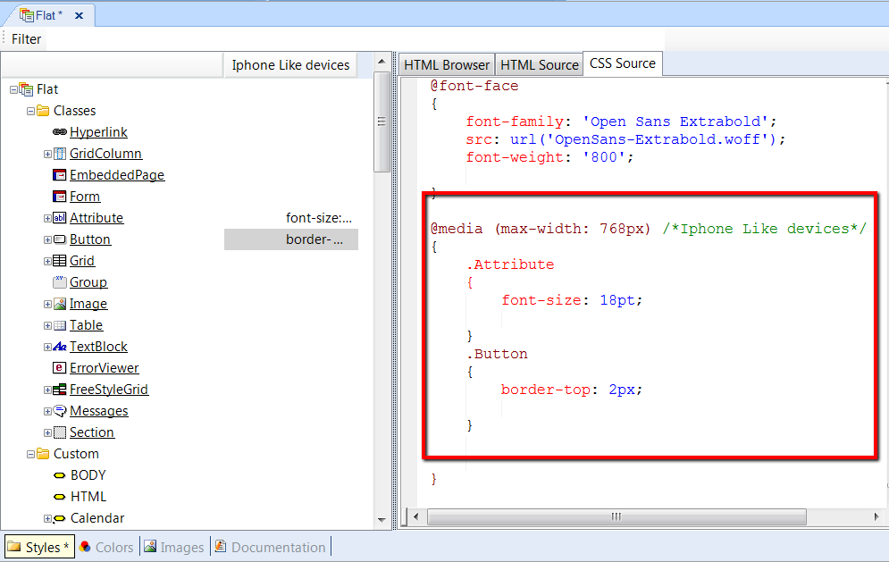

In a world of multiple devices with different screen sizes, resolutions and operating systems, it is common for designers to use different style sheets, depending on the screen size of devices. As the style sheet used for large displays may vary from the one used for mobile devices, it should be correctly adapted in each case by using a method called Responsive web design. There are cases where designers will want to change fonts, borders, visibility, or other aspects, but without changing the page content. In GeneXus, Themes help in configuring the look & feel of web objects. To support a responsive web design, Conditional Class Properties allow us to specify the circumstances in which the properties of a class should be applied. ExampleConsider the case where a designer must set a different Font size in accordance with the device’s screen. Instead of the "Attribute" class with Font Size = 22pt, the designer wants to set the Font Size to 18pt for cases where the device is a phone. The steps to take are as follows:
How to use the Editor to configure conditional classesThe Rules are shown as a list at the top of Theme Editor. Every time that we configure properties of a class in the context of that rule, we click on that Rule’s column. Note: in the figure below, the Border property of Button class that is unconditional, is shown by clicking on Button class.  The Border property of Button class which is conditional to the Rule, is shown by clicking on the column corresponding to that Rule:  In sum, we can say that, at runtime, the values configured for classes regarding conditional rules are taken into account only for devices matching the rules’ given conditions. The classes and properties considered at runtime are the unconditional classes, plus the non-default properties of conditional classes. Class properties inheritanceThe class properties defined in the context of a Rule inherit their values from unconditional classes. In the example above, the Font Size property of the "Attribute" class inherits from the unconditional value of the property. So, if the designer sets "Use Default" for that property, it inherits the value configured for the Font Size property of the unconditional "Attribute" class. Note: The implementation of this solution uses http://en.wikipedia.org/wiki/Media_queries in the CSS. The media query generated may be viewed in the CSS view in the Theme Editor.  |